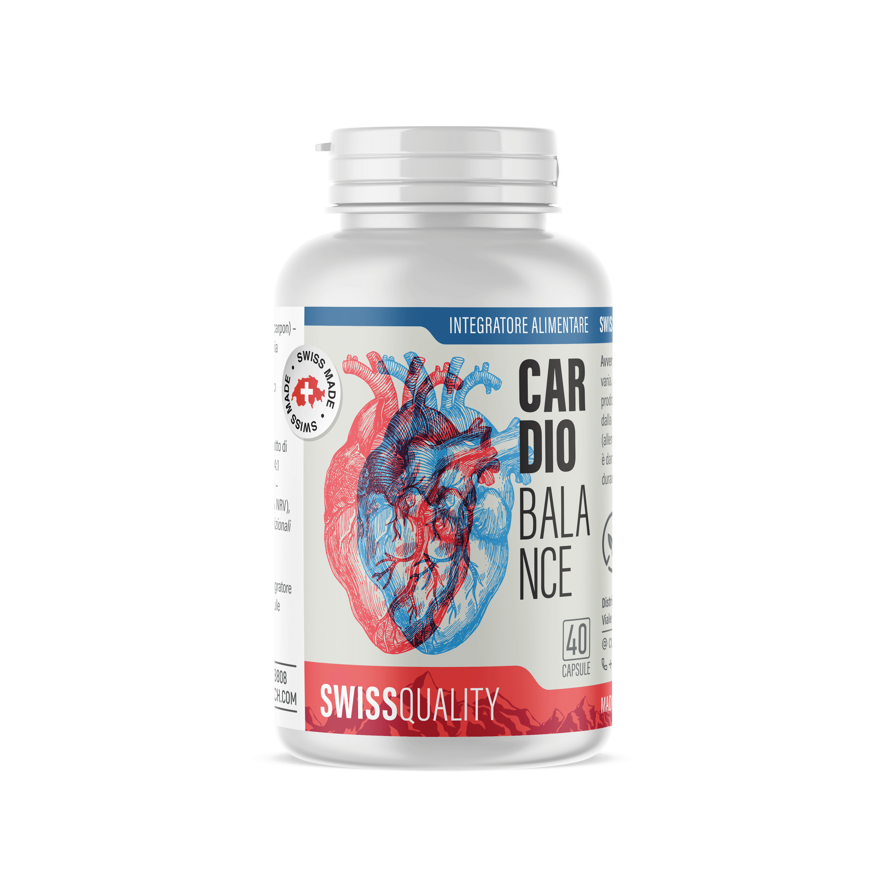

CardioBalance riporta la pressione arteriosa a livelli normali in 1 ciclo di trattamento!
Il prodotto innovativo CardioBalance favorisce la normalizzazione della pressione arteriosa, pulisce i vasi, protegge il cuore e riduce il rischio di ictus

Come agisce CardioBalance:
- L'estratto di foglie di biancospino pulisce le vene rimuovendo le placche di colesterolo
- L'estratto di ribes nero elimina il vasospasmo causato dallo stress
- L'acido folico riduce il rischio di infarto e di ictus
- L'estratto di mirtillo rosso protegge il cuore
- Il risultato è la normalizzazione della pressione sanguigna nel giro di 4-5 settimane
- I risultati possano variare a seconda della gravità della condizione e delle peculiarità del paziente
L'offerta è valida per un periodo di tempo limitato
Prezzo intero:
78 €Prezzo scontato:
39 €